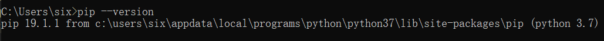
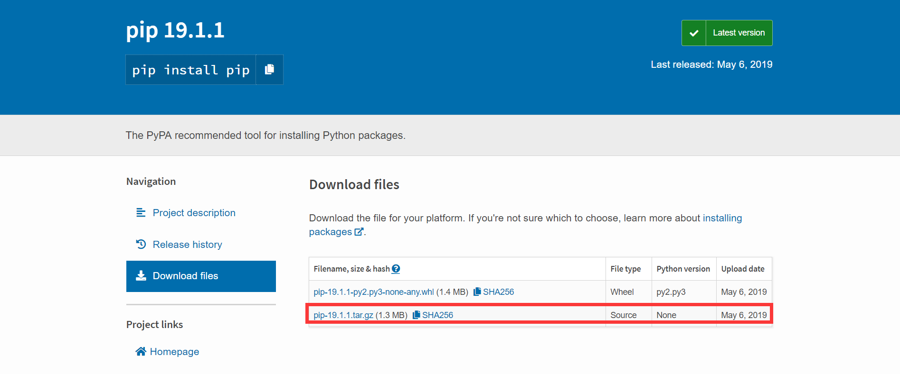
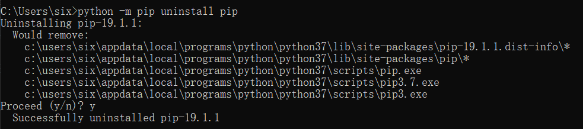
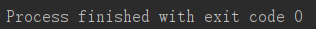
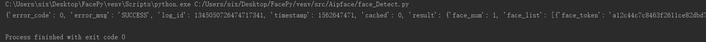
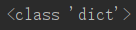

接口能力
前言
最近做的一个人脸识别的小项目，使用到的是百度的人脸识别SDK。百度的人脸识别支持人脸检测、人脸对比以及人脸查找；人脸检测功能可以检测人脸并定位，返回五官特征点及人脸的各属性值，人脸对比功能则会对两张图片进行对比并返回相似值，人脸的查找是在自建的人脸库中找到相似的脸，这其中也包括了人脸识别，人脸认证以及人脸库的相关操作。
本次项目使用的语言为python，使用的开发环境为PyCharm，系统为Windows10。
笔者暂时把自己的博客当作是是踩坑的记录。文章中如有错误及不当，敬请指正。
前期准备
pthon 3.7 安装
下载安装包
登录python官网下载对应的安装包，小六的电脑为Windows 10，所以下载的安装文件为Windows 系统，64位版本；

安装
建议勾选Add Python to PATH，然后点击Install Now，其他默认即可；

- pip安装
pip 是一个现代的，通用的 Python 包管理工具。提供了对 Python 包的查找、下载、安装、卸载的功能。（百度百科这么说的）
- 检查电脑中是否已经安装pip。
打开cmd命令行，输入pip --version,如果电脑中已经安装好了pip，那么会得到这样的返回。
 - 如果没有安装，那么会显示：

这种情况的话去pip下载地址下载第二个压缩包文件，
之后将压缩包解压，在命令行中进入压缩包解压后的文件夹，输入python setup.py install进行安装。
正常的话会显示：
再输入pip --version进行测试，当显示pip的版本信息即可。卸载pip（如果有需要的话，没错，就是我，大半夜强行卸载重装的我。）
命令行执行python -m pip uninstall pip,然后输入y确认卸载。
- 百度人脸识别sdk安装
命令行输入pip install baidu-aip进行安装，当显示Successfully installed baidu-aip…即表示sdk安装成功。
- 百度ai平台账号注册及应用申请
百度ai平台的官网地址为http://ai.baidu.com/百度的账号的申请就不用说了，申请好了账号电机右上角控制台，然后点击左边的人脸识别，点击创建应用。
填写应用名称，选择应用类型，填写应用描述，最后点击创建应用即可。

之后就会得到下面的应用，其中AppID，APIKey和Secret Key在后面的功能调用中会用到。
- 百度人脸识别sdk安装
功能调用
Client客户端
AipFace是人脸识别的Python SDK客户端，为使用人脸识别的开发人员提供了一系列的交互方法。
打开PyCharm，新建工程，在src目录下建立一个AipFac目录，作为本次人脸识别小项目各个子功能程序的存放地址。
新建Client.py，使用示例代码：
1 | from aip import AipFace |
该程序只是一个人脸识别的python SDK客户端，作为后续功能实现的平台。程序运行结果如下：

人脸检测
人脸检测接口检测图片中的人脸并标记出位置信息;
新建face_Detect.py，示例代码如下：
1 | import base64 |
本程序中使用的图片在上级目录中的photo文件夹中，图片名称为1.jpg，程序执行后并不会直接显示有效信息，因为client.detect(image, imageType,options)只是一个返回信息的函数，想要显示信息，可以将程序的最后改为：
1 | s=client.detect(image, imageType,options) |
此时程序运行在控制台输出数据：

数据的格式及处理会在后面详细说明。
人脸搜索
接口能力
- 1：N人脸搜索：也称为1：N识别，在指定人脸集合中，找到最相似的人脸；
- N人脸认证：基于uid维度的1：N识别，由于uid已经锁定固定数量的人脸，所以检索范围更聚焦；
这里演示使用1：N搜索，新建face_Search.py，实例代码如下：
1 | from src.Aipface import client |
代码中使用的照片为上一级目录里photo文件夹中的1.jpg，在Groop1这个人脸库用户组中进行查找,数据的返回数据暂时打印到控制台。
人脸对比
接口能力
- 两张人脸图片相似度对比：比对两张图片中人脸的相似度，并返回相似度分值；
- 多种图片类型：支持生活照、证件照、身份证芯片照、带网纹照四种类型的人脸对比；
- 活体检测：基于图片中的破绽分析，判断其中的人脸是否为二次翻拍（举例：如用户A用手机拍摄了一张包含人脸的图片一，用户B翻拍了图片一得到了图片二，并用图片二伪造成用户A去进行识别操作，这种情况普遍发生在金融开户、实名认证等环节。）；
- 质量检测：返回模糊、光照等质量检测信息，用于辅助判断图片是否符合识别要求；
这里演示两张人脸图片的相似度对比，新建face_Match.py,示例代码如下：
1 | from src.Aipface import client |
代码中使用的照片为上一级目录里photo文件夹中的1.jpg和2.jpg，两张图片里的人脸进行相似度打分,数据的返回数据暂时打印到控制台。
人脸库操作
接口能力
- 人脸的注册，更新，删除；
- 用户列表，用户信息，人脸列表等信息的查询；
- 创建，删除，复制人脸及用户组；
这里演示人脸的注册，新建face_Add.py，示例代码如下：
1 | import base64 |
代码中使用的照片为上一级目录里photo文件夹中的2.jpg，将人脸注册到group1用户组内，并命名该用户的id为qiuTao,注册的结果暂时打印到控制台。
返回信息的处理
人脸识别相关功能的程序执行返回的数据是json格式。
以人脸的搜索为例，上述人脸搜索的返回值为：
1 | { |
从上面我们可以看出，error_code为错误代码，当它不为0的时候，error_msg为显示一些对应错误的提示，就表示程序或多或少出现了某些问题导致请求错误，这时候需要去对应错误代码的官方解释来进行一定的调试；error_msg为错误信息，当error_code为0时，error_msg的值为SUCCESS；result又是一个字典，里面包含了比较重要的信息。face_token是人脸标志；user_list在人脸库中搜索到的人脸列表；group_id为搜索到的人脸所在的用户组；user_id为搜索到的人脸对应的用户id；user_info为搜索到的用户的相关信息（在人脸注册或更新时候添加的信息）；score为搜索到的人脸库中的图片和程序中的图片的相似度得分。
要想从这样的数据中获取对自己信息，可以先使用type()来得到返回值的类型：

，然后针对python中字典的描述，最笨最直接的一种方法可以使用索引的方法来得到信息。
比如这里我们想得到人脸搜索的user_id,可以使用下面的方法：
1 | print(s['result']['user_list'][0]["user_id"]) |
我知道，可能没有比这更笨的方法了，等我看完python的基础视频会再回来修正的。
程序执行的结果为：
这里得到了user_id具体的值，可以在后续的程序中调用。
图片上传格式
百度ai人脸识别支持的图片上传的格式有三种，分别是BASE64, URL和FACE_TOKEN：
- BASE64:图片的base64值，base64编码后的图片数据，编码后的图片大小不超过2M；
- URL:图片的 URL地址( 可能由于网络等原因导致下载图片时间过长)；
- FACE_TOKEN: 人脸图片的唯一标识，调用人脸检测接口时，会为每个人脸图片赋予一个唯一的FACE_TOKEN，同一张图片多次检测得到的FACE_TOKEN是同一个;
URL格式上传的是一整张图片，显而易见的一个缺点就是上传的数据量会比较大，而FACE_TOKEN的方式针对的是已经被百度人脸识别的后台处理过后的人脸标识，本项目中不合适。
本次小项目使用的图片上传格式为BASE64。BASE64就是一种编码方式，使用64个可打印字符来表示二进制数据。
要将图片转换成BASE64格式，首先要加载python内置的base64：
1 | import base64 |
然后对图片进行处理：
1 | with open("／home/chaowei/1.png","rb") as f: |
其中，b64encode是编码，b64decode是解码 ;
所以本项目中图片转换的示例代码为：
1 | base64_data=base64.b64encode(open("..\\photo\\1.jpg", "rb").read()) |
imageType为图片的格式，这里格式为BASE64。
Endding
我知道我现在还很菜的，我不知道以后自己会不会是个很厉害的程序猿，我只希望自己能够慢慢的努力，挣扎，不放弃。
记很喜欢的一句话：
螃蟹在剥我的壳
笔记本在写我
漫天的我落在了枫叶上雪花上，
而你，在想我